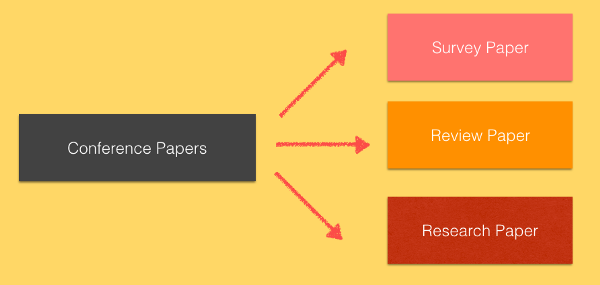

Learnt a new technical tool or software recently? Let’s use it to work on a small data-set or implement a mini-project.Why not publish it, by using flowery language, resplendent images, a couple of haphazardly chosen citations and some jargon, overnight? Viola! You have one of the shallowest papers in terms of depth, analysis and content. There is no gainsaying the fact that ‘Research’ is a LOT more than just publishing a paper or two by mere implementation, via a technological tool. It doesn’t happen overnight and deadlines are never concrete, nothing is immutable or foreseeable at times. Here’s why I’m writing this one- because I’ve done it too. Here are some resources and tips that could help you sail through your research ventures as an undergrad.
If we knew what it was we were doing, it would not be called research, would it? - Albert Einstein
Be a Sponge
Pretty out of the blue eh? If you’re an aspiring researcher, well, let’s just say that it’s crucial for you to be aware and up-to-date regarding the ongoing work in your domain of interest. Keep your eyes open for recent publications, news, research groups in your field of interest, corresponding conferences, research labs that offer internships, erudite professors and prominent individuals who have notable works and stellar publications in a particular domain.You must be wondering how to be on the lookout for information and where to get resources- don’t worry, we have a few references to get you started!
Research Groups , University Websites and Blogs
There are a plethora of domain-specific research groups in universities and private sectors that you could follow. Here’s a list of a few prominent groups:
CSAIL at MIT : The latest projects and impact areas are available on their website and Twitter page.
Baidu Research Blog is centred around computer vision, speech recognition and synthesis, deep learning, artificial general intelligence, high performance computing and natural language understanding.
Labs at the IITs and IISc : It’s best to follow IISc on LinkedIn for their current research ventures. On the other hand, The Hindu has articles on the latest research projects at the IITs. In addition to this, lab websites notify students about the upcoming events and projects; you never know when one of these may have openings for interns!
Individual blogs: Here’s a list of blogs that could help you hone your technical knowledge, in general.
Follow Professors and Researchers
Keeping tabs on the publications and research work of an acclaimed professor always helps. For example, I follow Dr. Fei-Fei Li (Stanford Vision Lab), Jitendra Malik (UCB), Partha Pratim Talukdar (IISc) and Alan W Black (CMU). Once you figure out where your interest lies, start connecting with professors beyond the scope of our college. Use Google Scholar to your advantage.
Become an IEEE and ACM Member
Being a member will help you leverage resources like Communications of the ACM, ACM Webinars and latest research, ACM Digital Library, ACM TechNews, IEEE Xplore Digital library and IEEE Spectrum. Moreover, you’ll get to know about conferences dates and volunteering opportunities for the same. Student memberships have their own perks after all!
Read, Read and Read!
“Research methodology is 85 % conceptual, mathematical and theoretical while implementation holds 15% and comes right in the end, according to my research practices” — Dr.Sanjay Singh
Reading relevant papers is of paramount importance, before jumping into conclusions or implementation. Starting from choosing the right papers to comprehending the concepts and the Math, from correlating current works with previous works to scrutinising limitations- this step covers it all! You’d be surprised at the number of people who skim through the Results and Observations Section, when the heart of a research paper lies in the very same ; as boring as they look, the tables, diagrams, readings and stats are super important! ‘How to Read a Paper’, by S.Keshav provides a 3 phase approach to reading a paper effectively. There are resources on reading journal articles and Sciencemag provides reading strategies used by researchers. You could go through the Morning Paper and a Harvard article to boot, in order to plan your next read!
Pen Down your Inferences- Get to Writing
Assuming that you’ve worked on a project/domain/research statement and have obtained the desired results, presenting your results is vital to the conference or journal, where you decide to submit your paper. David J. Malan’s techniques mention a few pre-requisites to this step, simplistically. Furthermore, ‘Writing Good Software Engineering Research Papers’ by Mary Shaw, ‘Basics of research paper writing and publishing’ by Michael Derntl, Writing a research article: advice to beginners and ‘Writing Research Papers’ by the Rice University, are a few good reads. It’s best to get your paper reviewed by your colleagues and professors, once you’re done; revisions enhance precision and content.
Ask Away
“Asking a question is embarrassing for a moment, but not asking is embarrassing for a lifetime”.- Haruki Murakami, Kafka on the Shore
Whether it’s about impactful conferences or trending research topics, I’ve personally found the advice provided by my professors, mentors and lab-peers invaluable. Find out what your course-mates are working on and approach the concerned faculty, for ideas and suggestions (in case you already have a problem statement in mind). Working under professors worked out for me, since they provided me with abundant internship opportunities, recommendations, connections, and personalised resources (pertaining to their research work). Never hesitate to ask!
A glimpse into the List of Journals provided by Dr.Sanjay Singh
Types of Papers
“A survey paper is a paper that summarises and organises recent research results in a novel way that integrates and adds understanding to work in the field. A survey article assumes a general knowledge of the area; it emphasises the classification of the existing literature, developing a perspective on the area, and evaluating trends.”- ACM Computing Surveys

Types of papers
Review, survey and research papers are a few categories of conference papers. Although review and survey papers do not focus on original research work, they form valuable scientific literature by summarising pre-existing works. Research publications are culminated domain-wise, so that readers gain a general idea and overview without having to brood over reading a gargantuan number of articles. A research paper focuses on original study, collection and analysis of raw data, experimentation and survey.
“A research paper analyses a perspective or argues a point. Regardless of the type of research paper you are writing, your finished research paper should present your own thinking backed up by others’ ideas and information.”- Suny Empire State College
Hacks to Present a Paper
Conferences provide approximately 15 minutes in presenting important aspects of your paper . But what we’re addressing deviates from this context in the sense that these were the steps I was asked to follow, by Sanjay Sir, while presenting an existing paper.Once you’ve read through a paper extensively, start by making a presentation of 5 slides. Each slide should cover the following:
Problem Statement- What is intended? What is the primary focus of the paper?
It’s needless to say that everyone follows a different strategy. However, a few guidelines won’t hurt. This one’s helpful for those who are intimidated to kick-start and venture into research; don’t let the bogeyman intimidate you! :) Let’s wrap this up with a simple flow, for newbies (shown below). Ideally, you should have at least three revisions, including one by a professor, team-mate or colleague.
By now, the Research Bogeyman has fled hopefully :P Don’t hesitate; start with your first research venture- it’s not rocket science; domain depth is the key. Note: The article comprises resources and tips based on my personal experiences. Feel free to recommend resources and provide suggestions as comments :) Return